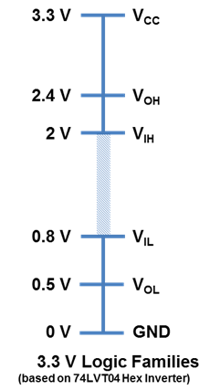
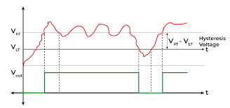
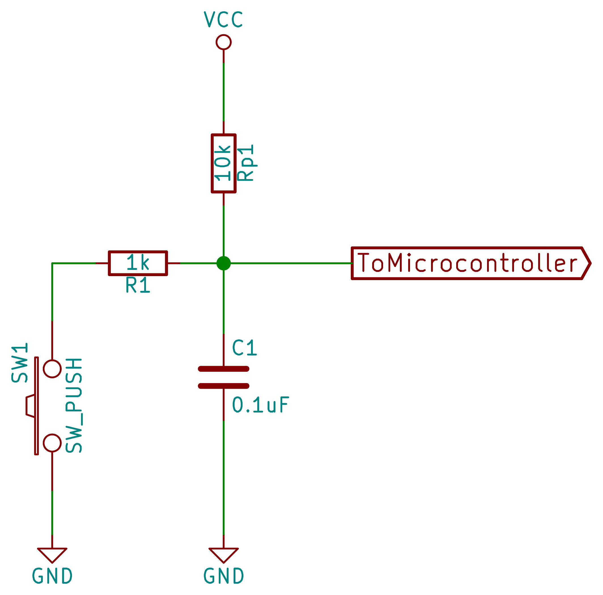

Entradas digitales
Qué es una entrada digital
Una entrada digital es un GPIO configurado para leer un nivel lógico: alto (1) o bajo (0). A diferencia de una salida, no impone voltaje; solo observa el que llega desde un botón, sensor digital o lógica externa.
Estados posibles
- Alto (1): voltaje considerado como “1”.
- Bajo (0): voltaje considerado como “0”.
- Flotante (Z): sin referencia; puede leer valores aleatorios (evítalo).
Niveles lógicos y umbrales
En la práctica, el comparador interno decide 1/0 por umbrales:
- 1 típico: ≥ \~2.0–2.4 VDD
- 0 típico: ≤ \~0.5–0.8 VDD Entre ambos hay zona incierta → evita operar ahí.

Pull-ups / Pull-downs (evitar “flotante”)
Los pulls son resistencias hacia VDD (pull-up) o GND (pull-down) que fijan un estado por defecto cuando la línea puede quedar flotante. En el Pi pico2 puedes usar pulls internos o externos.
Pulls internos (≈ 50–80 kΩ, típ. \~50 kΩ)
- Útiles: prototipos rápidos, botones cercanos (cables cortos), señales lentas/limpias.
- Limitaciones: son débiles; con cables largos o capacitancia elevada los flancos suben lento y entra ruido. No aptos para buses como I²C/1-Wire.
Pulls externos (1 kΩ–100 kΩ)
- Útiles: buses abiertos (I²C), cables largos/ambientes ruidosos, control preciso de RC (debounce), o para ajustar consumo/tiempos de subida.
- Trade-off: R baja → más corriente y flancos rápidos; R alta → menos corriente y flancos lentos/sensibles a ruido.
Guía rápida de elección
- Botón local: interno o 10 kΩ externo.
- Cable largo/ruidoso: 4.7–10 kΩ externo (+ Schmitt).
- I²C (open-drain): 4.7–10 kΩ y ajustar según capacitancia/frecuencia.
Problemas típicos y mitigación
Rebote (“bounce”)
Un botón mecánico genera múltiples conmutaciones en 1–20 ms al presionar/soltar. Mitiga con debounce en hardware (RC + Schmitt), en software, o ambos.
Ruido (EMI, cables, Z)
Las entradas flotantes o cables largos capturan interferencia. Mitiga con:
- Pull-ups/downs adecuados.
- RC + Schmitt trigger.
- Resistencia serie 100–330 Ω para limitar picos.
- TVS si el entorno es hostil (industrial/automotriz).

Dimensionamiento práctico
Consumo al presionar (activo-bajo con pull-up): \(I \approx \dfrac{V}{R}\)
- 3.3 V / 10 kΩ ≈ 0.33 mA
- 3.3 V / 4.7 kΩ ≈ 0.7 mA
RC para debounce (hardware): \(\tau = R \cdot C\)
- Punto de partida: 2–10 ms (p. ej., 10 kΩ + 220 nF → 2.2 ms).
Buses abiertos (I²C):
- Comienza con 4.7–10 kΩ y ajusta según capacitancia y frecuencia.
Nota RP2350 – corrientes de E/S: las cifras de corriente por pin (2/4/8/12 mA) y límite total \~50 mA aplican a salidas. En entradas, la corriente la dominan las resistencias de pull y fugas del pad.
Implementación
Bajo nivel (PADS/SIO)
#include "pico/stdlib.h"
#include "hardware/structs/sio.h"
#define button_pin 16
int main(void) {
const uint32_t LED_BIT = 1u << PICO_DEFAULT_LED_PIN; // LED (p. ej. 25 en Pico/Pico2)
const uint32_t BTN_BIT = 1u << button_pin; // Botón en GPIO1
// Asegura función GPIO
gpio_init(PICO_DEFAULT_LED_PIN);
gpio_init(button_pin);
// LED como salida; botón como entrada
sio_hw->gpio_oe_set = LED_BIT; // salida
sio_hw->gpio_oe_clr = BTN_BIT; // entrada
// IMPORTANTE: pull-up externo -> desactivar pulls internos
gpio_disable_pulls(button_pin);
while (true) {
// Con pull-up (externo), presionado = 0 (nivel bajo)
if ((sio_hw->gpio_in & BTN_BIT)) {
sio_hw->gpio_set = LED_BIT; // LED ON
} else {
sio_hw->gpio_clr = LED_BIT; // LED OFF
}
// Breve descanso / anti-rebote mínimo
sleep_ms(1);
}
}
Alto nivel (Pico SDK)
#include "pico/stdlib.h"
int main(void) {
const uint LED = PICO_DEFAULT_LED_PIN; // En Pico/Pico 2 suele ser 25
const uint BTN = 16;
// LED salida
gpio_init(LED);
gpio_set_dir(LED, 1);
// Botón entrada con pull-up (presionado = 0)
gpio_init(BTN);
gpio_set_dir(BTN, 0);
while (true) {
if (gpio_get(BTN) == 0) {
gpio_put(LED, 1); // ON
} else {
gpio_put(LED, 0); // OFF
}
sleep_ms(1); // anti-rebote mínimo / descanso
}
}
Debounce (hardware y software)
Hardware (RC + Schmitt)

- Filtra rebotes con una constante de tiempo 2–10 ms.
- Habilita Schmitt para histéresis.
Software (tres patrones)
-
Retardo fijo (bloqueante) Tras detectar cambio, espera 10–20 ms y vuelve a leer. Simple, pero bloquea (usa
sleep_ms). -
Integrador / ventana deslizante (no bloqueante) Muestrea a intervalos regulares; acepta el cambio cuando acumulas N lecturas coherentes. Útil con varios botones.
-
Máquina de estados Estados:
estable_0 → posible_1 → estable_1 → posible_0 → ...Solo confirmas transición si se mantiene el nuevo valor por un tiempo/lecturas.